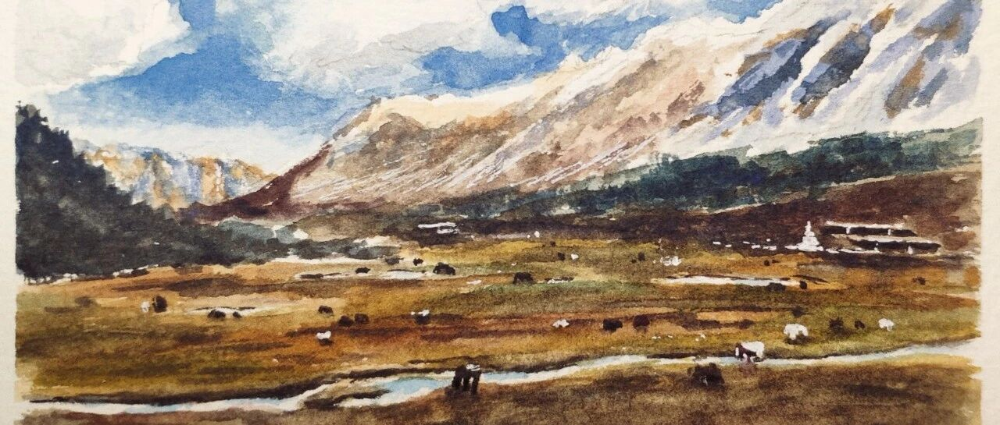

川西之旅Ⅱ——徒步稻城亚丁。
稻城亚丁是这次川西之旅的重点，也是最具挑战的一天，需要在高海拔地区登山徒步。我们都很担心会因为高反半途而废，所以在门口就租了便携式制氧机。除了爬几层台阶就需要停下来大口喘气之外，整个行程还是相当顺利的，最后在一段艰难的高海拔爬升之后，终于见到了山顶的两个圣湖（海拔4600）。
我们没有按照官方路线走的，结果误打误撞先到达了海拔最高的五色海。
五色海旁边紧挨雪山，不知是不是被冰雪影响，清澈见底的五色海泛着美丽的紫色，气质高贵，非常美丽。

在五色海就能眺望到远处的牛奶海，牛奶海的气质相比于五色海更加温和，湖泊中间是非常纯净的蓝色，边上一圈是奶白色。牛奶海被雪山环绕，水面上跳动的日光和雪山上被吹动的经幡，都像是高山上的神明在施展幸福的魔法。
当我们终于站在了牛奶海旁时，瞬间觉得路上的一切“苦难”都是值得的。

浅蓝色的牛奶海和泛着紫色的五色海仅相隔几百米，景色却大不相同，非常神奇。因为五色海和牛奶海三点多就要清场，所以我们一路匆匆忙忙赶往山顶。沿途的风景也非常非常美，但都只能留到下山时再看了。

图：五色海与牛奶海，来自队友的无人机
被三座神山环抱的洛绒牛场也是一个非常美的地方。早晨上山路过时，空气清冷，牛场显得十分空旷。
到了下午时分，厚厚的高山草甸在午后阳光的笼罩下变得温暖柔软，清澈见底的贡嘎河从中穿过，映衬着蓝天。

许多早晨在“上班载客”的马匹们，正在和它们的牦牛朋友们，一起安安静静地享用晚餐，享受着美好的“下班生活”。
奔波了大半天，看过了圣洁的湖海、雄伟的雪山，因为壮丽美景而精疲力尽的时候，又在回程的路上看到了这么简单惬意的生活景象，实在是太治愈了。
同时拥有雪山、圣湖、草场、河流，各种生灵的稻城亚丁，有种自由的、充满灵性的美，是传说中“最后的香格里拉”，非常值得一去。
好啦今天先到这，欢迎留言、转发or给个“在看”呀~谢谢啦！
下回见~